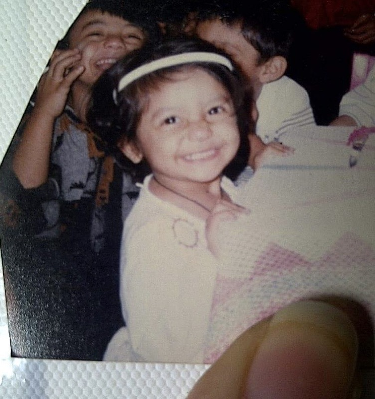
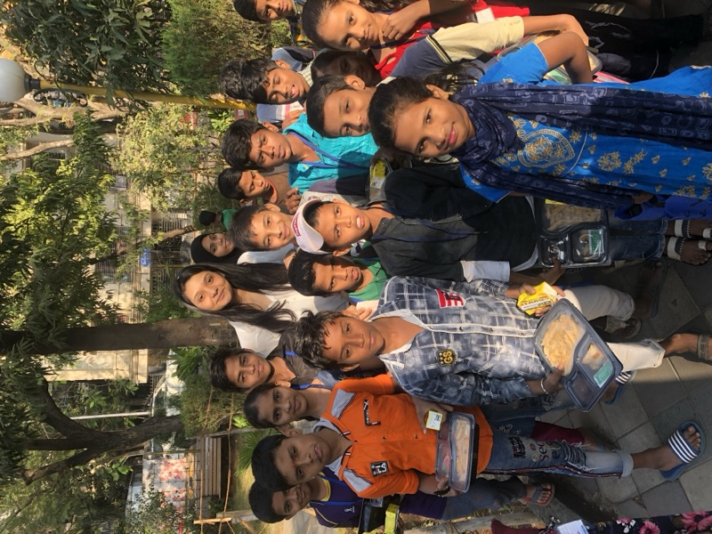
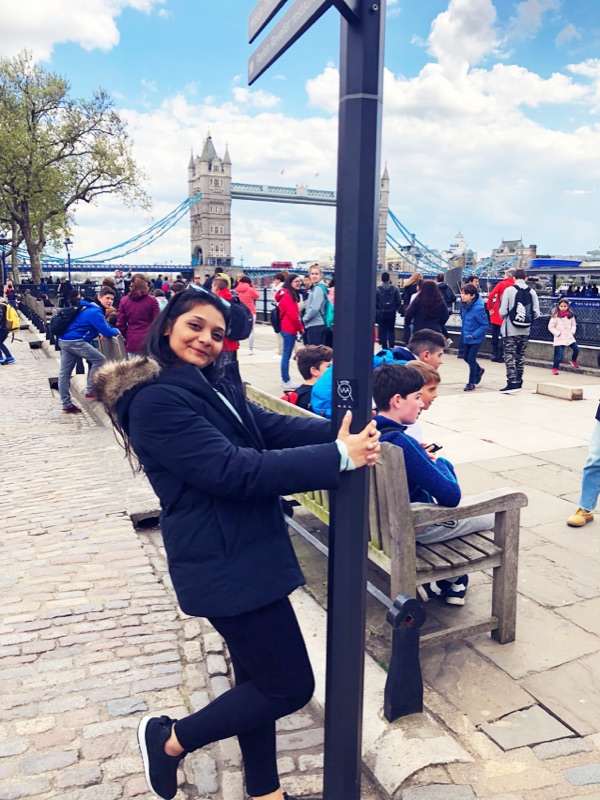
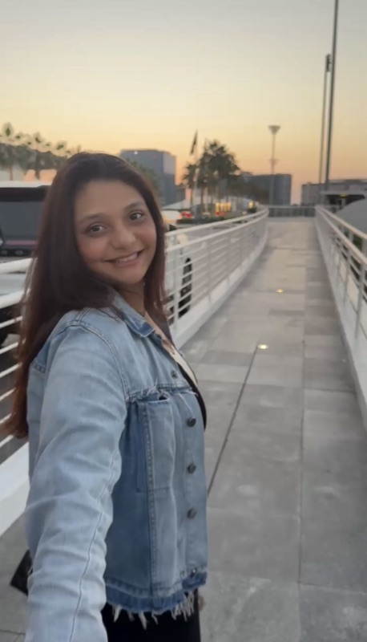
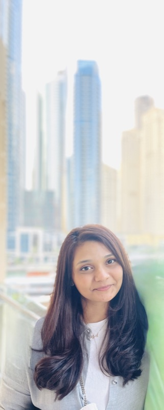
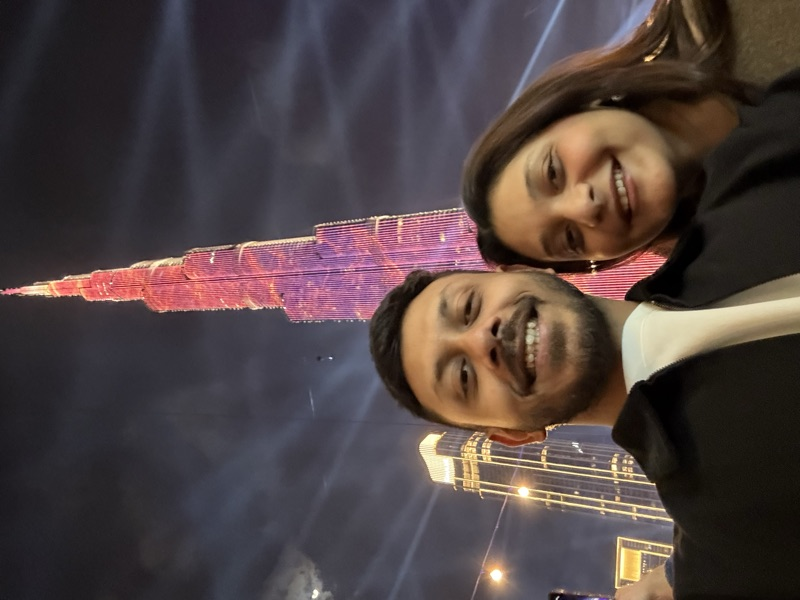

Wahed · podcast
The Muslim Money Experts, Ep.3: Paul Pogba
Launched for a halal investing platform, 400,000+ users, four SEC-regulated markets. Awareness went 4.5% to 30%.
Watch →Dubai · Content, community & AI
Consumer psychology is a puzzle I keep going back to. Content, community and data are how I get at it. I'm at my best with people in a room, and I run a games night that has become more organised than it strictly needs to be.

The funnel I built at Ivory. Creators at the top, clinicians at the bottom, and a repositioned product as the thing it all pointed at.
Wrote the pitch that turned cognitive neuroscience into a story a television audience could follow.
Built a 3,000 member WhatsApp community of caregivers before the product shipped.
Defined the tone of voice through a rebrand, wrote every surface to it, cleared each word through US SEC compliance.






From making financial advice sound legal to turning brain health into binge-worthy content. Now I build the machine that tells it at scale.